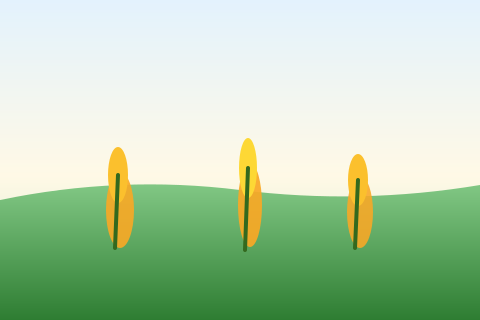

Home
Uganda maize planning in your pocket.
Important details
Loading…
Please read before using the app (spacing, varieties, pests, and schedule).
How to use the app
MUST READ before usage
- Add your farm name — open , then under Farm profiles type the name.
- Save the name — tap Add farm (and later use Save current data to this farm when you change details).
- Add planting details in the Planting module (date, area, variety, and inputs).
- That automatically updates all Farm Manager pages for the active farm — Crop Care, Finance, timeline, calendar, yield, and the rest.

Your digital agronomist
From planting to harvest and money — realistic schedules, quantities, and alerts tuned for Uganda maize.
Farm manager
Open a module below. Your data stays on this device.
Quick summary
Farm profiles
Save multiple farms, switch for comparison. Your inputs for the active farm are saved automatically as you type and when you leave the page — use the button below for an explicit save confirmation.
Per active farm. Switch farm above to see each farm’s notes.
Farm calendar
Maize action dates for the active farm (planting date in Planting). Switch farm above to refresh.
📅 Open calendar
👆 Tap the bar above to show / hide your schedule
Each section opens on its own screen for easier use on mobile.
Planting
Plan land, spacing, and dates — analysis uses only the first card. Remembrance is separate (memory only).
Planting plan
1 seed → often hybrid + 1×3 spacing. 2 seeds → often local + 2×3; analysis shows per-acre targets for both.
Holes, seed kg, and calendar below come from this plan only. Your field diary is in the separate Planting remembrance card.
Planting output
Planting remembrance
Optional diary for what you really did in the field — counts, kg opened, dates, short notes. Saved with this farm. Not used for holes, seed math, spacing rules, or the season calendar; those use only the Planting plan card above.
Tap Analyze planting plan above to refresh output; remembrance appears in its own section at the bottom of the results — for memory, not planning.
Crop care
Fertilizer, weeding, spraying, and pest alerts.
Crop care module
Fertilizer, weeding, spray windows, pests — rule-based for Uganda seasons.
Care plan
Timeline
Key dates from your planting day. Saved on this phone.
Timeline & reminders
Set planting date under Planting first, then build your list.
Future: push notifications via PWA Notification API when permission granted.
Finance
Track capital, spending, and optional revenue.
Records & finance
Labour — enter each job; the app sums them for your total.
Labour total: 0 UGX
Cost breakdown
Log each use of money: tools (hoe price + date), paid workers, seed, fertilizer, and more. Saved per farm on this device.
Sums each type into the matching fields on Overview (replaces those numbers). Capital and revenue are not changed.
Yield & profit
Forecast bags and money using your land and market price.
Yield & profit prediction
Prediction
Harvest
Harvest method, drying, storage, and net bags.
Harvest & post-harvest
Post-harvest output
Advice
Rule-based tips from your planting and finance inputs.
Farm advice engine
Advice summary
Reports
Compile timeline, costs, advice, and forecasts for printing.
Reporting
Future premium: one-tap PDF export (e.g. jsPDF) + cloud backup.
Guides
Read this before Farm Manager — spacing, varieties, and maize science basics for Uganda.
Seasons in Uganda
- Long rains: roughly March–May — main planting window in many maize areas; more reliable moisture for germination and top-dressing.
- Short rains: roughly September–October — second window; shorter season and higher drought risk between showers.
- Off-season / dry months: higher water stress; shorter-maturity hybrids or irrigation (where possible) matter more.
- Why it matters: late planting shortens grain fill; dry spells at flowering (tasselling) cut yield sharply.
Hole spacing: 1×3 ft vs 2×3 ft
Population per acre drives competition for water and nutrients. This app uses ~14,500 holes/ac (1×3) and ~7,200 holes/ac (2×3) as planning figures.
1 ft × 3 ft (~14,500/ac)
Advantages
- Higher plant stand → more ears per acre if moisture and fertility match.
- Often paired with hybrids and 1 seed/hole for uniform fields.
- Can exploit good rains and strong soil.
Disadvantages
- Strong weed pressure — must weed on time.
- Drought or poor fertiliser → more stress per plant; higher bar for management.
- More seed and often more spray coverage per acre in practice.
2 ft × 3 ft (~7,200/ac)
Advantages
- Lower stand → less competition; better fit for drier zones or lower input systems.
- Common with 2 seeds/hole (local/OPV) then thin to the strongest plant.
- Easier hand labour per hole on some farms.
Disadvantages
- Fewer plants/ac → need good yield per plant to match dense stands.
- Weeds still critical; wide rows must be kept clean early.
- If fertiliser is strong, you may “leave yield on the table” vs tighter spacing.
Depth: target 3–5 cm in moist soil; deep planting in cold/wet soil slows emergence.
Seed types: hybrids, OPVs & local maize
Variety choice affects yield potential, cost, drought tolerance, and whether you can keep seed for next season.
Commercial hybrids (single-cross, etc.)
Advantages
- Highest yield potential under good management, fertiliser, and rains.
- Uniform height and maturity → easier spraying and harvest timing.
- Breeding for disease traits (where tagged on the bag) can help in hotspot areas.
Disadvantages
- Do not rely on farm-saved seed — vigour and yield collapse in F2 seed.
- Higher seed cost; needs disciplined fertiliser and weed control to pay off.
- Some hybrids are less forgiving of mid-season drought at flowering.
This app assumes 1 seed/hole for hybrid-style planting.
OPVs (open-pollinated varieties)
Advantages
- Farmers can often save and select seed for replanting (still renew every few seasons for purity).
- Lower seed cost per season than many hybrids.
- More stable under moderate input levels than some hybrids in marginal years.
Disadvantages
- Lower ceiling yield than top hybrids when inputs and rains are excellent.
- More plant-to-plant variation; watch rogue off-types when saving seed.
- Often planted 2 seeds/hole then thin — extra labour.
Local / landrace / “traditional” maize
Advantages
- Adapted to local tastes, storage, or micro-climate over time.
- Seed saving is normal practice; cash outlay for seed can be minimal.
Disadvantages
- Yield potential usually below improved OPVs/hybrids in trials.
- Tall or late types may face more lodging or borer damage.
- Still needs weed control and fertility to avoid yield collapse.
Uganda: common names on seed bags
Shops and agro-dealers stock NARO/Longe, multinational hybrids (Dekalb DKC, Pannar, Pioneer, etc.), and regional brands. Names change by season — use this as a checklist, not a catalogue. Always read the bag for maturity, population, and disease tags.
Longe — know “H” vs numbers only
- Longe 7H, 8H, 9H, 10H, 11H (and similar) are hybrids: high yield potential, uniform crop, buy fresh certified seed each season — do not replant harvest grain as seed.
- Longe 1, 3, 4, 5 are widely sold as OPVs: farmers often save seed for a limited time (still renew for purity); this app treats them like other OPVs → often 2 seeds/hole then thin.
- NARO also releases newer hybrids (e.g. NAROMAIZE / “BH” lines in trials and shops). Treat any bag marked hybrid like other hybrids unless extension says otherwise.
Dekalb (DKC) and similar codes
- DKC codes (e.g. DKC 90-89, DKC 80-55, DKC 80-33 — often written without spaces like “DKC9089”) are single-cross type hybrids sold across East Africa. Maturity and heat/drought notes are on the label.
- Use 1 seed/hole with firm spacing and fertility; these varieties need disciplined weed control and fertiliser to pay off.
Other brands often seen in Uganda
- Pannar, Pioneer (e.g. PH / “30” series in some seasons), Seed Co, Corteva-linked lines — all hybrid-style unless the bag clearly says OPV.
- Regional lines such as Bazooka (UH5051, UH5052, UH5053) and Tego / WE (e.g. WE2101–WE2115 class) appear in some markets; follow bag population and days-to-maturity.
In Planting, type the exact name on your bag (e.g. “Longe 10H”, “DKC 90-89”) so spacing and seed/hole hints match.
Maize science — short notes for the field
- Hybrid vigour: first-generation (F1) seed from controlled crosses grows strongest. Grain from a hybrid field is not the same genetically — replanting it loses yield and uniformity.
- Population: more plants per acre only raise yield if water, N, and weed control keep up; otherwise dense stands run out of moisture at tasselling.
- Critical moisture periods: germination, knee-high to tasselling, and grain fill (milky dough to hard dough). Drought at silking cuts kernels per cob.
- Growth stages (simplified): emerge → vegetative (V-stages) → tassel & silk (flowering) → blister → dough → black layer on the kernel when physiologically mature — harvest timing follows variety and moisture, not only leaf colour.
- Diseases in humid maize belts: Grey leaf spot, northern leaf blight, rust — rotation, residue management, and resistant varieties (where labelled) help; scout continuous maize fields more often.
- Maize streak virus (MSV): vectored by leafhoppers; some varieties carry better tolerance — ask extension for current recommendations in your district.
- Rotation: breaking maize-after-maize reduces some pests and diseases; legumes in the rotation can support the next maize crop when managed well.
- Soil temperature: cold, wet seedbeds delay emergence and favour rots; aim for a warm, moist 3–5 cm depth at planting when rains are reliable.
Soil, pH & land prep
- Drainage: maize rots in waterlogged soil — open furrows or ridges on heavy clays where needed.
- pH: very acid soils lock up phosphorus; lime or manure programs are district-specific — test or ask extension.
- Organic matter: manure/compost improves water holding and slow-release nutrients but is not a full substitute for planned NPK on high targets.
- Tillage: aim for a fine, moist seedbed at planting; big clods and trash hurt germination uniformity.
Water stress & yield
- Drought at germination → patchy stand; consider replanting gaps (see app timeline).
- Drought around knee-high to tasselling → direct yield loss; top-dress urea when soil is moist, not on stressed wilting leaves.
- Moisture at grain fill affects final weight per kernel — late drought cuts bags even if the crop “looks green”.
Nutrition (NPK) in plain terms
- Nitrogen (N): drives leaf and grain growth — supplied by DAP/compound early and urea/CAN as top-dress (app uses 50+50 kg/ac class planning).
- Phosphorus (P): early root establishment — often in basal DAP/compound; band beside seed, not on seed.
- Potassium (K): stalk strength and stress — many blends include K; severe deficiency shows firing on lower leaves.
- Split application: splitting N reduces leaching risk in heavy rain and matches crop demand; follow local extension for rates.
Pests & diseases (short list)
- Fall armyworm (FAW): caterpillars in whorl and on grain — scout from ~3–4 weeks; rotate modes of action per label.
- Stem borers: tunnel in stalks — weak stems, tip damage; systemic insecticides or IPM where promoted.
- Leaf blights (grey leaf spot, NLB, etc.): worse in humid, continuous maize — rotation and resistant varieties help.
- Storage: weevils and mould at >13–14% moisture — dry on tarp, hermetic bags or fumigation only per label.
Uganda action calendar (summary)
- Day 0: plant; basal DAP/NPK ~50 kg/ac in hole, not touching seed.
- 5–10 DAP: check germination; fill gaps.
- 14–21 DAP: first weeding.
- 21–30 DAP: top dress urea or CAN ~50 kg/ac, 5–8 cm from plant, cover soil.
- 28–35 DAP: second weeding + hill soil.
- 30–40 & 45–55 DAP: insecticide sprays if pests exceed threshold — follow label (~200 L water/ac, ~10 knapsack loads).
- 60–75 DAP: tasselling/silking — avoid unnecessary stress.
- 100–120 DAP: harvest window by variety; dry 2–3 weeks; bag near ~13% moisture.
Disclaimer
This guide summarises common extension-style recommendations; districts differ in soil, variety performance, and markets. Always confirm rates, chemicals, and varieties with local extension, certified agronomists, and product labels. The app does not replace field scouting or official warnings.
Profile
Support and account options.
How to use the app
MUST READ before usage
- Add your farm name — open , then under Farm profiles type the name.
- Save the name — tap Add farm (and later use Save current data to this farm when you change details).
- Add planting details in the Planting module (date, area, variety, and inputs).
- That automatically updates all Farm Manager pages for the active farm — Crop Care, Finance, timeline, calendar, yield, and the rest.
App lock (PIN)
Use a 4-digit PIN to open the app. After you unlock, you stay open when you refresh the page in this tab. Closing the tab, opening the site in a new tab, or fully closing the browser / PWA usually clears that session — you’ll need the PIN again. Use Lock app now when you hand the phone to someone else. Register a phone number when you set up — if you forget your PIN, enter that same number to set a new PIN. Nothing is sent to a server; the number is stored only on this device (hashed).
Changed your number? Update it here (you need your current PIN).
Change PIN — enter current PIN, then new PIN twice.
Backup email
Under maintenance. Email backup and email recovery are temporarily disabled in this app version.
For now, use Download backup and keep the .json file safe. Use Restore backup when needed.
Email backup is under maintenance.
Use local file backup only until email features return.
Recovery currently works via Restore backup file only.
Data on this device
Farm records are saved in the browser as site data (localStorage), not as throwaway “temp files” only. On both phone and laptop they normally stay after refresh, closing the tab, and restarting the browser — the app also autosaves as you type.
- Usually still there: reload, normal close/reopen, and many “clear cache” options that do not include cookies/site data.
- Can erase data: choosing clear data for this site / cookies, some “free up space” cleanups, private mode when it ends, or Clear app data below.
- Protect yourself: tap Download backup sometimes and keep the
.jsonfile safe (Files, Drive, email). Use Restore backup if you ever lose data.
The backup file does not contain your PIN. Restore asks for your PIN if one is set.
Contact developer
Same number for call and WhatsApp — questions, feedback, or support.
0703 268 522
International: +256 703 268 522
Clear app data
Removes everything stored by this app on this device: all farms, finance and capital log, timeline, advice cache, home tips state, your PIN, and registered phone (for PIN reset). You will set up like a new install. Requires your PIN if one is already saved.
About this app
AgriSmart Uganda helps you plan maize using rule-based estimates. It does not replace extension officers, agronomists, or official weather and market data.
Version 1.1.0 · PWA-ready · Data stored on this device only
Privacy
Farm figures and reminders are saved in your browser (localStorage). Nothing is sent to our servers unless you tap Call/WhatsApp, open an external link, or the developer enables cloud backup (then uploads go only to that URL). Use Download backup to keep a copy off the phone or laptop. To wipe everything on this device, use Clear app data (PIN required if set).
Tips
- Add this site to your home screen for an app-like experience.
- Use the floating chat button or Profile → Contact developer (0703 268 522 — call or WhatsApp).
- Use “Print / save report” under Farm → Reports for a paper copy.
- Profile → Download backup saves your farms to a file — useful before phone cleanups or updates.
- Profile → Backup email: saves your address on the device for reminders; when a cloud URL is enabled, it can drive recovery and auto-upload.